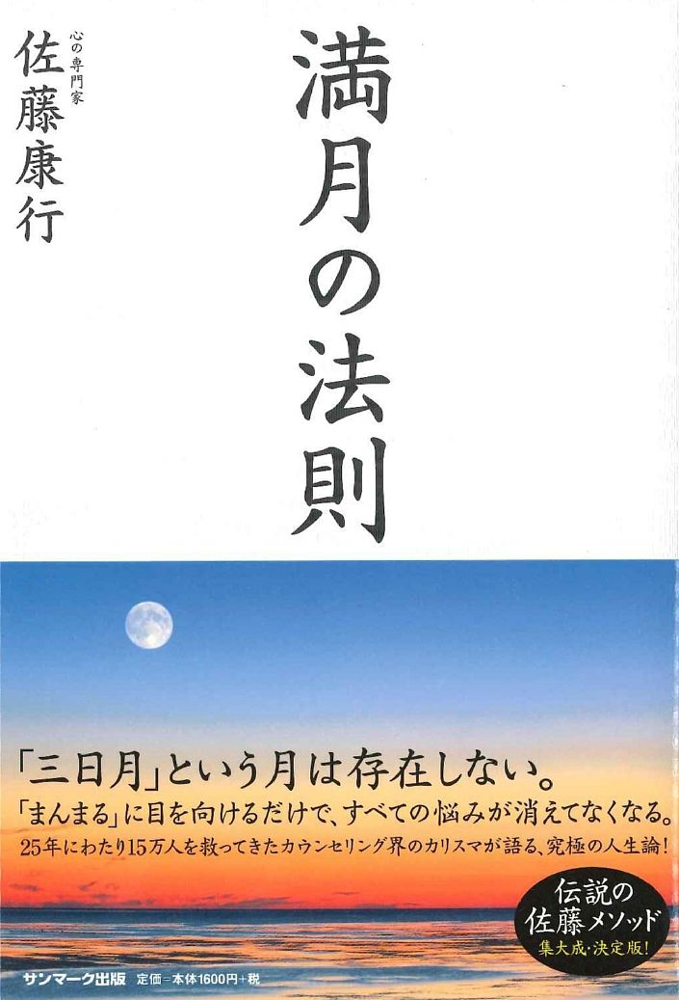

| 時間管理の極意 (アースパブリッシング) | |
| ＜編＞地球ブログ | |
| (2017) | |
＜編＞地球ブログ
時間は、言うまでもなく貴重な資源であり、大切な財産です。例えば、１分間は誰にとっても同
じ１分間ですが、生まれたばかりの赤ちゃんにとっての１分間と、余命いくばくもない方にとって
の１分間は、その意味合いがまったく違いますよね。
たっぷりと時間があったり、時間そのものの価値に無関心な方にとっては意味がない話ですが、
時間の大切さや、時間が足りないことで本当に苦しい思いをされている方に少しでも役に立てれば
と思い、時間を無駄にせずに済み、それだけでなく、これまで以上に活用できる方法を研究してい
きたいと思います。
まず、時間を有効に使うために押さえておきたいのが、パラレル（並列）思考です。同時進行で
、並列的にものごとを行うことで、最短の時間で成果を得ようという発想です。実際の例としては
、キッチンで料理をする場合を考えてもらうと非常にわかりやすいと思います。
例えばごはんと味噌汁、そして玉子焼きをつくる時のことを考えてみてください。ごはんが炊き
あがってから味噌汁をつくり始め、味噌汁ができてから卵を割る・・・と、こんなやり方をする人
はいませんよね。ごはんを炊いているその間に、味噌汁のだしをとり、さらにその間に卵を割るな
ど、いろいろな作業を同時進行的に行うはずです。
このように、キッチンに用意されたあらゆるツールも巧みに使い、料理を完成させていくわけで
す。そうすると、ほぼ同時にごはん、味噌汁、玉子焼きが完成して、できたての料理を食べること
ができます。
これが「パラレル思考」と言われるものです。コンピュータの世界でも極めて有効な考え方で、
計算能力の高いCPU（中央処理装置）を並列につなぐことで、より強力な計算能力が生み出されます
。日本が誇るスーパーコンピュータ「京（けい）」も、CPUが８万個を超える超並列システムなのだ
そうです。
膨大な量の計算を瞬時にこなすスーパーコンピュータのように仕事ができたら、あなたはとって
も楽ですよね？ このように、パラレル思考には大きな可能性があると言えます。
しかし、実はここで私がお伝えしたいのはそういうことではありません。わざわざスーパーコン
ピュータを使わなくても、「京」をはるかに超えるメカニズムがあなたには備わっています。それ
に気づくほうが、どんな時間の有効活用法よりも効果抜群です。そして本当は、そのメカニズムに
気づくことのほうがはるかに大切なのです。
それは、人間の脳に眠る潜在能力とも違います。人間の脳にも無限の可能性が秘められていると
は思いますが、本質的にそれとは別の話なのです。人間が秘めている可能性は、個の可能性だけで
はありません。仮に潜在能力を人間がすべて発揮できたとして、その人間が協力しあい、地球上の
７３億人が一斉に同じ目的のために動いたら、どんなことでもできると思いませんか？
つまり、個の能力を発揮することが効率的なのではなく、最終的には、全体がひとつになって協
力し合うことが、一番「時間活用」においても有効なのです。
では、なぜ個よりも全体が協力しあう方が有効なのでしょうか？
それは、あなたという存在を考えていくことで答えが出ます。あなたは両親がいて、祖父母がい
て、ご先祖様がいて・・・と、命が紡がれてきた存在です。そのご先祖様を通じてあなたの命を遡
れば、地球上での生命誕生がその発端にあると言えるでしょう。
この地球上で最初に生命が生まれた場所は、海だと言われています。その海がなければあなたは
存在しませんでした。そして、海をたたえた地球がなければ、あなたは存在しませんでした。
さらに言えば、地球はこの宇宙があって初めて成立しています。宇宙はビッグバンによって誕生
したとされていますが、誕生したからには、ビッグバンの元となったものがあるわけです。
生命とは、人間に見られる有機的なものだけでなく、惑星や宇宙そのものも含め、すべてを系統
樹のように見たとき、地球であっても人間であっても、私たちが住む天の河銀河も、天の河銀河の
となりにあるアンドロメダ銀河であっても、同じつながりをもつひとつの生命だと言えないでしょ
うか。
人間は、人間でありながら宇宙全体とひとつである命です。つまり、自分以外のすべてのものも
、自分だということです。この観点に立てば、より大きな視点で相手を思いやり、協力することが
、実は自分自身へと還元されるのです。
誰もが喜び、誰もが幸せになる。そうなるように行動することは、一見遠回りかも知れません。
しかし、それが実は一番の近道だということです。
時間を有効活用するために、より全体的な視点を獲得するためには、この本がとても有効です。

『満月の法則』
自分にとって大切なもの、重要なことは、頭で考えているだけではなかなかはっきりとは分かり
ません。何かをテーマにして考え始めたとしても、連想が連想を呼んだり、空想を始めてしまった
りと、脱線しがちな性質が思考にはあります。
頭の中から、いくら止めようとしても制御できない思考が常に量産されてきませんか？ それを
自動思考（オートマティック・ソート）と呼びますが、意識がある限りは止めようがありません。
いえ、仮に意識がなくても無意識のエリアからその思考がわいて出てきていて、思考や感情に大き
な影響を与えています。
その証拠に心の状態が悪ければ、眠っていて意識がなくても、朝起きたときにクタクタになって
いることもありますよね。
このように、思考は制御がとても難しく、放っておくといろいろな考えが湧き、うつろいやすい
ものです。それだけ自由であるとも言えますが、自由であるが故にどこまでも広がっていってしま
い、収集がつかなくなります。
きちんと思考を管理できなければ、いくら頭で考え続けても何の成果にもつながらないでしょう
。
しかし、実はそういったことを避けることができるツールがあります。
それは、日記をつけることです。毎日、自分が考えていること、感じたことを書くことで記録に
残すのです。そうすると、自分の思考パターンがわかり、何を重要視しているのか、そして何に困
っていて、どんな行動をとっているのかが見えるようになってきます。
日記を書くことで、いわば自分の全体像を俯瞰して見ることができるようになるのです。物事に
優先順位をつけて時間管理をするためには、全体像がより明確に見えているほうがいいですよね？
書くという作業を行うことで、単に頭を使うよりも物事の輪郭がはっきりと見えてきます。何か
漠然としていた感覚やイメージが、文字によって形を与えられるからです。
それに、紙に書いておけば、自分が考えていたことを一旦忘れることもできます。
今から10 年以上前の話ですが、私の同年代のある友人は「頭で考えていることが、頭のなかのデ
スクトップにいつも全部あって、見えている」と言っていました。
当時は「頭がいい人はうらやましいな」という思いもありましたが、さて、今自分なりに振り返
ってみるとどうでしょうか？ いつ何時も頭の中がいろいろな考えでいっぱいになっていたら、気
持ちまでいっぱいいっぱいになってしまいそうですよね。
日記をつけるということは、忘れるリスクを回避できるということですが、書くことで頭がスッ
キリする作用もあります。それは精神衛生上も好ましいことですし、さらに日記を書きたくなる「
報酬」にもなります。
よく「頭を使え」「深く考えるんだ」などと言いますよね？ でも、せっかくなので自分の手や
ペンも使って、頭と連携させたほうがお得です。書くことで、頭だけで考えるよりもさらに効果的
に頭が使えて、考えが深くなるからです。
そうすると考えが「最適化」され、優先順位が明確になり、タスクにとりかかるまでのスピード
も上がるのです。
「日記を書く時間なんてない」「もっと即効性のある方法が知りたい」と思われるかも知れません
が、自分の優先順位を知らないでひたすらタスクをこなすなんて、それこそ舵が壊れた船に乗って
いるようなものす。たどり着く場所が見えない以上、非生産的なやり方なのです。
日記を毎日書けなくても、忙しいあなたが送っている毎日の時間を今だけとめて、考えているこ
とをひたすら書いてみてはどうでしょうか？
あなたがきちんとあなたの心の声に耳を傾ける。たったこれだけでも意味があります。それは、
いままでないがしろにしていた自分の本音を聞いてあげることだからです。それが自分自身への癒
しになり、本音が見えてくるからです。
時間の効率化の観点からすれば、一見、日記を書くことは遠回りに感じられるかも知れません。
しかし、自分の方向性が見えなければ、そもそも何のために時間を使うのか、わかっていないこと
になります。ですので、まずはぜひ自分の考えを書くところから始めてみてください。
＜
編＞
地球ブログ
＜
サイトURL＞
http://earth.cx/